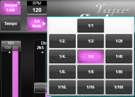
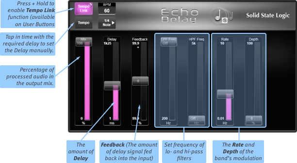
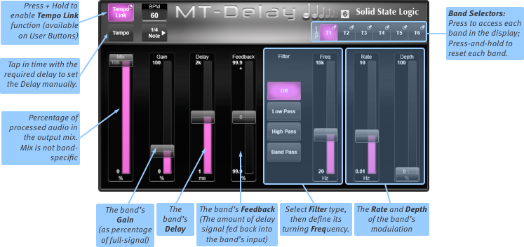
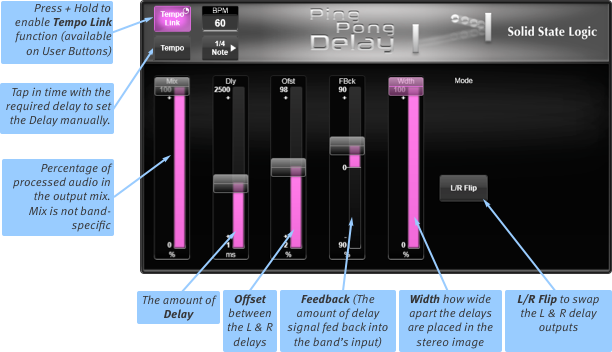
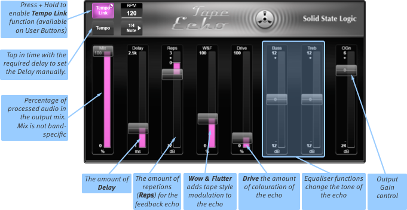

Delay Effects
Tempo Link and Tap Tempo
All of the delay effects below have a Tempo Link button, allowing the Tempo buttons of multiple delay effects in a single FX Rack to be linked together and 'tapped' simultaneously.
Ensure any effects you wish to link are within the same Effect Rack (vertical column). Press & hold the Tempo Link button of each effect module you wish to link.
Tapping the Tempo button of any Tempo Linked module will now adjust the tempo of all Tempo Linked modules in the same FX Rack (up to their delay limits).
The BPM display to the right of the Tempo Link button displays the BPM (Beats Per Minute) for the current effect module. Double tap the display to enter a specific BPM value. The BPM value can be 'multiplied' by using the Note menu below it.
|
 |
Tempo Linked effect modules will keep their BPM tempo synchronised (within the maximum delay values for each effect), but the Note values are independent, allowing different effect modules to have different multiples of the 'base' tapped tempo.
The tempo may also be tapped out using the User Buttons. User Buttons can be accessed from the Control Tile (Home > User Buttons) or from the Master Tile hardware (ensure Mode button is green and adjacent User label is lit). By default the first six User Buttons are assigned to Tap Tempos but these can be changed from the Options page:
- User Button 1 = Tap Tempo for FX Rack 1
- User Button 2 = Tap Tempo for FX Rack 2
- User Button 3 = Tap Tempo for FX Rack 3
- User Button 4 = Tap Tempo for FX Rack 4
- User Button 5 = Tap Tempo for FX Rack 5
- User Button 6 = Tap Tempo for FX Rack 6
Echo Delay

The simple Echo Delay is available with a maximum delay of either 1.25 seconds or 2.5 seconds.
Most of the Echo Delay module's controls should be self-explanatory, though the following notes may help to clarify them:
Note: In addition to the Delay slider, the delay time can also be set by tapping the Tempo button in time: the unit's delay will be defined by the pause between taps.
Note: The Feedback is the amount of delay signal fed back into the band's input, as a percentage of the original signal. To have no feedback, place the slider at the mid point; move the slider up from the middle to increase the feedback signal from 0% to 99.9%; move the slider down from the middle to decrease the feedback of the inverted signal from 0% to 99.9%.
Multi-Tap Delay

The Multi-Tap Delay is available in 2-, 4- and 6-tap versions, providing up to six bands of tap-delay; touch the T1 to T6 buttons in the top right to define which band is being edited in the rest of the window.
Press & hold these buttons to gain access to a Reset button for each individual band.
The Mix slider controls the mix between wet (processed) and dry (unprocessed) signals at the module's output. The Mix level is module-wide and not specific to any band.
The band Gain, Delay and Feedback controls should be self-explanatory.
Note: The delay time can also be set by tapping the Tempo button in time: the band's delay will be defined by the pause between taps.
Note: The Feedback is the amount of delay signal fed back into the band's input, as a percentage of the original signal. To have no feedback, place the slider at the mid point; move the slider up from the middle to increase the feedback signal from 0% to 99.9%; move the slider down from the middle to decrease the feedback of the inverted signal from 0% to 99.9%.
Each band also has a Filter which can be applied to the delay signal:
Define the filter mode by touching one of the buttons down the centre of the module, then define the filter's centre frequency using the Freq slider.
Drag the right sliders to set the Rate and Depth of the band's modulation.
To reset a band, press & hold its T button and select the Reset option from the drop-down list that appears;
To reset the whole module, press & hold Reset FX.
Ping Pong Delay

The Ping Pong Delay module provides a delay that alternates between the left and right channels.
Tape Echo

The Tape Echo module emulates an analogue tape echo device, with controls for adjusting Drive and Wow & Flutter (W&F), in addition to Bass and Treble tone controls.
The Reps control allows you to adjust the amount of signal fed back into the module. A positive feedback loop can be created that will saturate the effect, just like an analogue tape unit.
Useful Links
Detail ViewEffects Rack
Dynamics Effects
EQ Effects
Modulation Effects
Reverb Effects
Other Effects Modules
Audio Tools
Automix
Index and Glossary